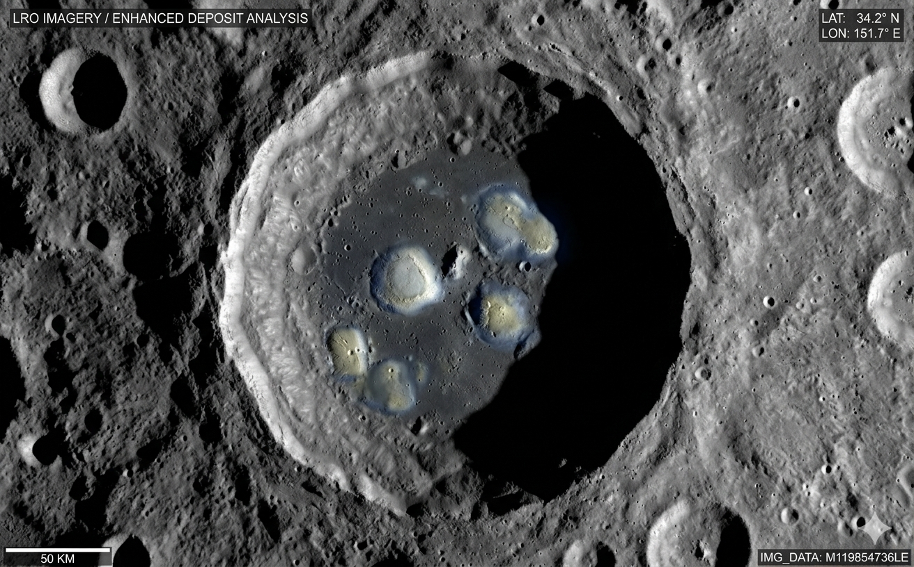
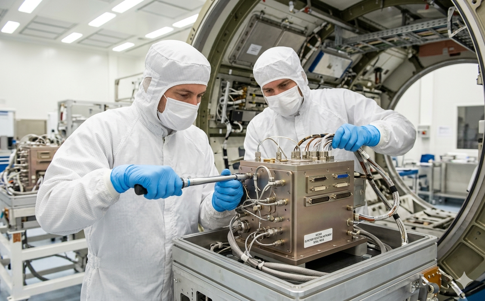

CAPE CANAVERAL, FL — In what NASA officials are calling "a monumental step for both human exploration and the culinary sciences," the Artemis crew is making final preparations for a launch that could reshape our understanding of the lunar surface — and, potentially, of cheese itself.
The four-person crew completed their final pre-flight checks early this morning at Kennedy Space Center, running through abort procedures and verifying communications systems with mission control in Houston. Commander Reid Wiseman led the team through a simulation of translunar injection while flight engineers checked and re-checked the Orion spacecraft's environmental controls, navigation arrays, and — notably — a suite of instruments not typically associated with space travel.
"Everything is nominal," said launch director Charlie Blackwell-Thompson during this morning's briefing. "The crew is focused, the vehicle is ready, and we are go for launch."
Beyond the Known Terrain
While much of the mission profile follows the established Artemis architecture — a lunar flyby bringing the crew closer to the moon's surface than any humans since the Apollo programme — this mission will chart a trajectory that carries the Orion capsule over previously unobserved regions of the far side. It is these uncharted expanses that have generated quiet but unmistakable excitement among a certain subset of the scientific community.
For decades, lunar geologists have noted unusual formations in low-resolution orbital imagery of the far side — pale, rounded deposits in shadowed craters that do not correspond to any recognised mineral profile. While mainstream analysis has attributed these to regolith variations or imaging artefacts, a growing body of peer-reviewed research has raised an alternative hypothesis: that conditions in permanently shadowed far-side craters may have given rise to complex organic compounds with structural and aromatic properties consistent with aged dairy products.

"We are not making any claims at this stage," said Dr. Haruki Tanaka, principal investigator for the mission's surface composition programme, speaking from the Jet Propulsion Laboratory. "But the spectral data is, frankly, unlike anything we have encountered in forty years of remote sensing. There are absorption bands in the infrared that are — and I want to be precise here — consistent with the molecular signatures of casein protein matrices. We owe it to the scientific method to investigate."
The Nose Knows
To that end, the Orion spacecraft has been fitted with what NASA's engineering division has designated the Volatile Organic Compound Olfactory Detection Array, or VOCODA. The instrument, developed jointly by NASA's Goddard Space Flight Center and the European Space Agency's Technology Centre in Noordwijk, is capable of detecting and classifying airborne molecular compounds at concentrations as low as two parts per trillion.
While VOCODA was officially commissioned for general atmospheric analysis during the lunar flyby, sources within the programme have confirmed that its detection parameters were calibrated using reference samples of over three hundred cheese varieties, ranging from a straightforward Lincolnshire Poacher to a particularly assertive Époisses de Bourgogne.
"The instrument doesn't know what cheese is," clarified Dr. Elena Marchetti, VOCODA's lead systems engineer. "It detects volatile organic signatures and cross-references them against a library of known compound profiles. If those profiles happen to include a comprehensive database of artisanal and industrial cheese volatiles, that is simply a matter of scientific thoroughness."

The spectral data is, frankly, unlike anything we have encountered in forty years of remote sensing.
— Dr. Haruki Tanaka, Principal Investigator, JPL
Expert Consultation
In what has been described as a routine advisory arrangement, NASA has retained the services of Professor Jean-Marc Duclos, Chair of Applied Fromagerie at the Institut National de la Recherche Agronomique in Rennes, France. Professor Duclos, widely regarded as one of Europe's foremost authorities on cheese classification and flavour chemistry, will be present at the Johnson Space Center in Houston for the duration of the mission.
"I am here in a purely consultative capacity," Professor Duclos said in a brief statement released through NASA's international partnerships office. "Should the crew's instruments detect any volatile signatures that fall within my area of expertise, I will be available to assist with characterisation and classification. I have brought reference materials. This is standard procedure."
When pressed on the nature of the reference materials, Professor Duclos declined to elaborate, though reporters at the Johnson Space Center noted the arrival of several temperature-controlled cases bearing the insignia of the Comité Interprofessionnel du Gruyère.
Provisions for All Eventualities
The mission's supply manifest, portions of which were made available to reporters under a Freedom of Information request, reveals that the standard astronaut food packages have been supplemented with what the document describes as "cultural and morale provisions suitable for extended mission scenarios."
These include fourteen bottles of wine — among them a Côtes du Rhône, a Sancerre, and a Portuguese Tawny Port — as well as a selection of water crackers, quince paste, and "assorted accompaniments." The manifest notes that the pairings were selected by an unnamed sommelier "with reference to a broad spectrum of potential dairy-adjacent flavour profiles that may be encountered during surface proximity operations."
NASA spokesperson Janine Torres addressed the manifest during the pre-launch briefing with characteristic directness: "The crew will be undertaking an historic mission of extraordinary scientific and human significance. They deserve to be well provisioned. We do not comment on specific menu selections, but I can confirm that all items aboard have been tested for suitability in microgravity environments. The Port was particularly challenging."
A New Frontier
As the countdown continues, the mood at Kennedy Space Center is one of measured anticipation. The crew is reported to be in excellent spirits. Commander Wiseman, when asked at the final press conference whether he was prepared for whatever the far side might reveal, offered only a brief smile.
"We're going to the moon," he said. "We're going to do science. And we're going to keep an open mind."
Launch is scheduled for 14:33 EDT. The Daily Cosmos will provide live coverage.
This article will be updated as events develop. Follow @dailycosmos for live launch updates.
Comments (47)
This is the most important mission since Apollo. I've been saying for years that the far side deposits don't match any known mineral. Finally someone is taking it seriously.
This is clearly just regolith variation. I cannot believe taxpayer money is being spent on cheese detection equipment.
Professor Duclos is a national treasure. If there is cheese on the moon, he will identify it. The man once classified a new Comté variant solely by its aroma at a distance of eight metres.